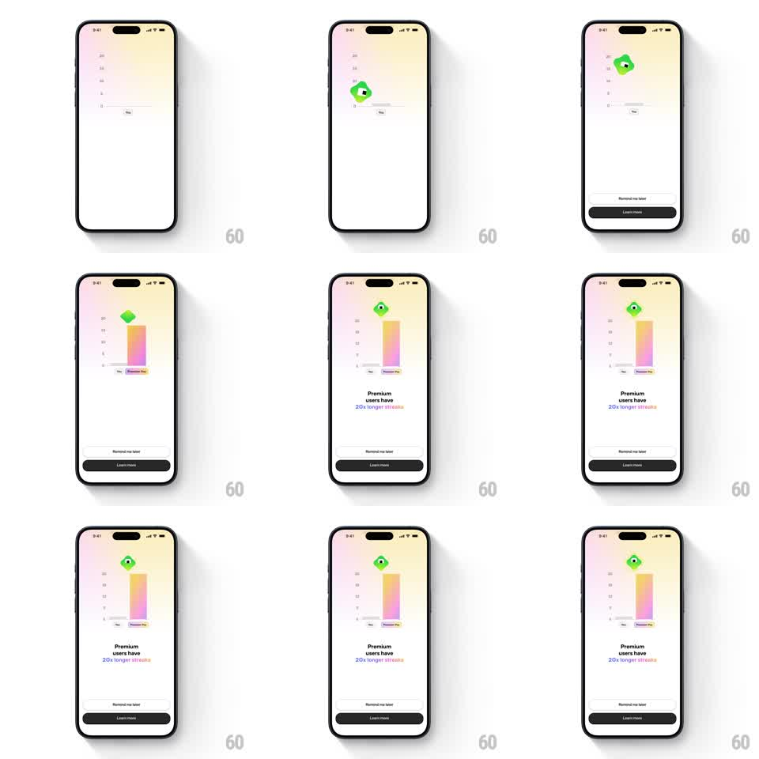

Media
Frame-by-frame

Rebuild this animation 1:1: Brilliant's premium upsell - a bar chart compares a short gray "You" bar against a towering gradient "Premium Plus" bar, and the Koji mascot leaps from the low bar to the tall one to land the message "Premium users have 20x longer streaks".

Rebuild this animation 1:1: Brilliant's premium upsell - a bar chart compares a short gray "You" bar against a towering gradient "Premium Plus" bar, and the Koji mascot leaps from the low bar to the tall one to land the message "Premium users have 20x longer streaks". ## Integration Integration: stack-agnostic spec - springs given as stiffness/damping, timed motions as duration + curve; map every value to your framework and animation library of choice. ## Scene Soft warm-gradient screen: a minimal bar chart with axis ticks, a small gray bar labeled "You", and a tall pink-orange gradient bar labeled "Premium Plus". Koji, the green blob mascot, stands on the short bar. Below: the headline "Premium users have 20x longer streaks" (with gradient-highlighted "20x longer streaks"), a "Remind me later" text button, and a dark "Learn more" button. ## Motion spec Pattern: chart grow + mascot leap, ~2s. - Chart: both bars grow from zero (500ms, ease-out, the premium bar 80ms later for a race feel). - Leap: Koji squashes, arcs from the You bar to the Premium bar (parabolic flight ~600ms with squash-and-stretch), lands with a bounce (spring ~300/12) and a happy wiggle; a sparkle pops on landing (200ms). - Copy: headline words fade/slide up (60ms stagger) after the landing; "20x longer streaks" carries the same pink-orange gradient as the bar. - Idle: Koji bobs gently atop the tall bar (6px, 2s). ## Calibration - Height contrast is the argument - the premium bar should be ~5x the You bar, not a modest bump. - The leap waits for both bars to finish growing. ## Reduced motion Bars fade in at full height; Koji appears on the premium bar; headline fades in (250ms). ## Don't miss - The bar gradient and the highlighted phrase in the headline share the same pink-orange gradient. - Bars are labeled "You" and "Premium Plus" under the axis.